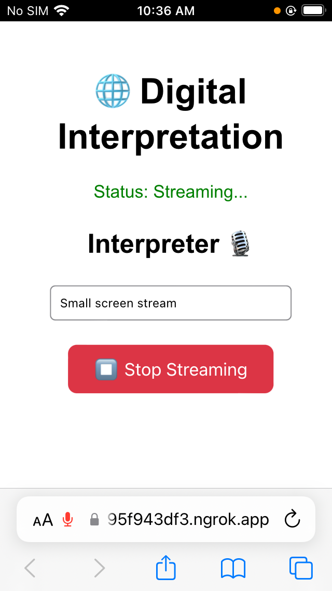
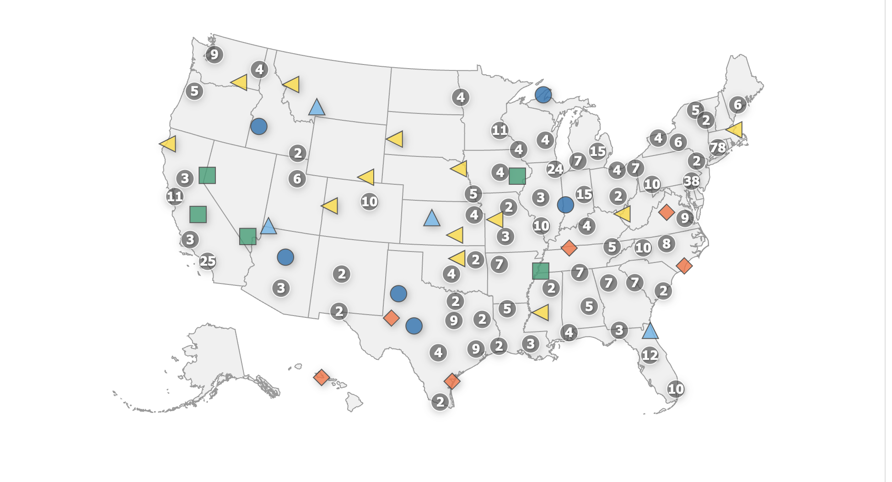

HCI × Computer Science Education
Is AI democratizing CS education, or introducing new barriers? How do learners and educators actually experience AI tools in practice?
PhD student in Human-Computer Interaction at the University of Waterloo, advised by Prof. Edith Law in the HCI Lab
I study how technology, and especially AI, can make computing education more accessible, and where it quietly builds new barriers.
I am a first-year PhD student in Human-Computer Interaction at the University of Waterloo, where I joined the HCI Lab in September 2026 to work with Prof. Edith Law. Before Waterloo, I graduated from Williams College with a double major in Computer Science (Honors) and Women's, Gender & Sexuality Studies.
Pairing computing with gender studies shaped the questions I care about most: who technology is built for, who gets left out, and how we can make learning more inclusive. My research spans CS education, accessibility, and equity in tech. Some of my favorite experiences have been teaching kids to code—designing a sixth-grade LEGO robotics curriculum and leading a coding camp for fifth- and sixth-grade girls.
My long-term goal is to become a computer science professor at a small liberal arts college, where teaching and research go hand in hand.
Is AI democratizing CS education, or introducing new barriers? How do learners and educators actually experience AI tools in practice?
Designing technology with and for people with disabilities. I am currently working with Prof. Edith Law on research at the intersection of accessibility and AI.
Examining gender bias in technology and investigating who gets left out of computing—and how educational and design practices can change that.
At Waterloo, I'm working with Prof. Edith Law on research at the intersection of accessibility and AI.
Simultaneous interpretation (SI) is essential for equitable access to medical, legal, and civic services, but traditional SI systems rely on expensive, bulky proprietary hardware—transmitters, receivers, and consoles—that community organizations, schools, and nonprofits often can't afford.
My thesis asked: why not use the devices people already carry? I built a browser-based SI platform (React, Node.js, WebSockets) where interpreters stream audio by language and listeners pick a language channel on any phone or laptop, with no installation required. It replaces $4,700+ of hardware with software running on a phone or laptop plus $5 headphones.
Through a needfinding process (surveys, interpreter webinars, and online communities), iterative prototyping in Figma, and live user studies with multilingual students, I evaluated usability, scalability, device compatibility, and cost.


Tracking the landscape of AI education programs across the U.S. I built validation datasets to check the accuracy of extracted program information, then moved into an engineering role refining the automated link and curriculum scraping pipeline.
A small 3D-printed robot I built and programmed for a robotics class.
Developed accessible learning tools and Google Colab modules for high school educators on mapping the impact of coastal storms.
Designed a computational thinking curriculum where sixth graders built and coded their own LEGO robots; led a week-long coding camp for 5th/6th grade girls.
Help hours for Programming Languages and Data Science & Computing For All.
Prototyped an online education platform in React/JavaScript for educators to browse resources and customize lesson plans, with inclusivity in mind.
Muzny, F., Jones, C., Ithier, C., Sikora, H., Patel, H. H., & Brodley, C. E. (2026). Mapping AI Programs in the US: A Status Report from Early 2026 and an Analysis of AI Majors and Minors. arXiv preprint arXiv:2606.12428.
Jones, C. (2025). A Digital Platform for In-Person Simultaneous Interpretation. Honors thesis, Williams College.
A longtime love of mine—and I've also loved sharing it by coaching youth lacrosse and soccer.
I'm a dog person through and through, and have loved volunteering at an animal shelter.
Always hunting for the next great meal and exploring local spots wherever I live.
Experimenting in the kitchen and testing out new recipes to share with friends.
I'd love to hear from you, whether it's about research collaborations, CS education, or accessibility.